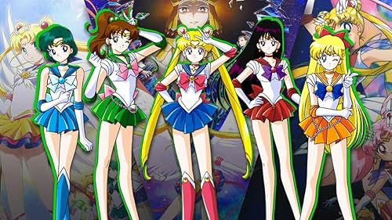

historia
"Te castigaré en el nombre de la Luna", esta es quizás una de las frases más conocidas del mundo del anime, la oración utilizada por Usagi Tsukino (Serena en Latinoamérica) en la serie Sailor Moon marcaron a toda una generación en una época en que el anime comenzaba a romper las fronteras de Japón y se transformaba en un fenómeno a nivel mundial. Sailor Moon es un manga escrito por Naoko Takeuchi el cual se publicó entre julio de 1992 y abril de 1997, y que contaba la historia de un grupo de chicas que debían proteger a la Tierra de peligrosos enemigos. Dado el éxito de manga es que la publicación tuvo un anime que se emitió los mismos años que el manga y que tuvo varias diferencias en la historia y desarrollo de los personajes. A pesar de que Sailor Moon cuenta la batalla de las Sailor Scout en la Tierra la historia comienza en la Luna, en un reino llamado "Milenio de Plata". Desde este lugar es de donde proviene Luna, la gata color violeta oscuro que acompaña a Serena que tiene una luna en su frente. En el anime Luna era consejera de la gobernante del reino, mientras que en el manga, ella servía a la hija y heredera de la reina, la Princesa Serenity.
